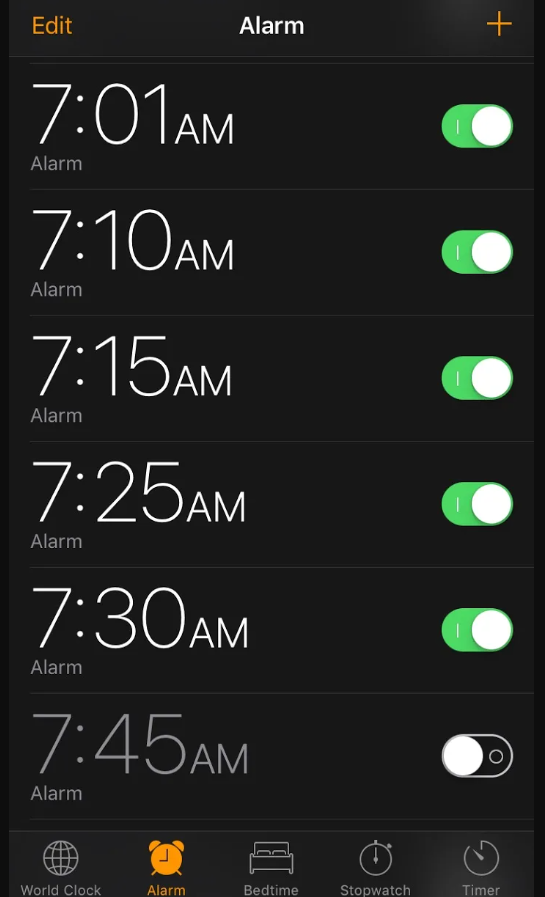
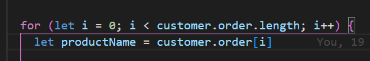
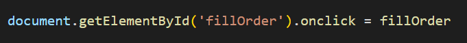
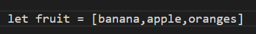
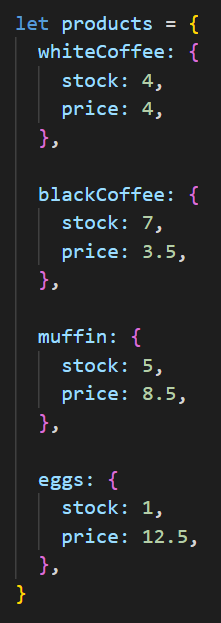
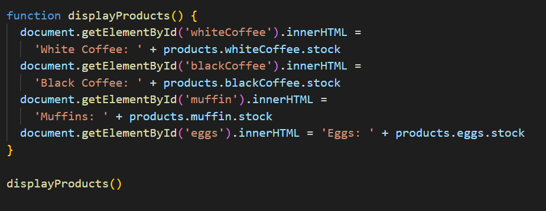

Hello, non-technical friend! This is a quick lay down of what Javascript and the DOM is!
Having a website without Javascript is like having a house and trying to do things like turn on lights, run appliances, etc. but there's no power. You have the switches, you have the gadgets, but nothing actually happens with them.
In the world of websites, HTML, CSS and Javascript are three of the main languages that power the entirety of the web. And they do it together. To continue the house analogy, HTML is your "stuff" - the gadgets, the light switches, the physical infrastructure. CSS is how stuff looks and where it's aligned, I guess you could say the interior
designer. And Javascript is what makes it do things. What tells the light to switch on and off when the switch is flipped. What makes the gadgets move when you tell them to, and in what ways.
Control Flow and Loops
Control flow and loops are like the multiple alarms some people set on their phones:

They are arranged from top to bottom in order from earliest to progressively later. Similarly, when browsers interpret your code, they read the code from top to bottom in a straight line. This is the standard control flow.
However, there are some exceptions to this. A main one is loops. Say for some reason you wanted to set an alarm for every 5 minutes for the rest of the day. Instead of manually having to put in a new alarm for every 5 minutes, you could just write one alarm command with a loop that when it repeats it runs the same thing but adds on an extra 5 minutes.
In this way, loops can be great time-savers, and also have a number of other interesting applications. This is an example of what a 'for' loop looks like:

The DOM
The DOM stands for Document Object Model. It is the first step between your code in a HTML file on a server or on your computer and your browser taking that info and making it appear as it does in your browser. It takes all the documents you have for the website and makes it into a family-tree like representation so that the different elements and pages within it can communicate with each other. This is the space from within which Javascript can interact with HTML, modifying it depending on user inputs or other scripts. For example, it makes the connection between a
Javascript script that works on its own to run a script to increase or decrease a number and a button in real time, so that when the button is clicked, that script is triggered. That is quite a common way that the DOM is used. For this reason, the commands often look something like this:

So, you can see that it accesses the document (your HTML document), it connects to a bit of code in the document that has the id 'fillorder' and it tells it to run the function fillorder when it is clicked.
Arrays and Objects
Arrays and Objects are two different types of bits of Javascript that you can use, alongside loops. Putting things within an object or array make them easier to access later on. The difference between them, though, is that arrays number them off from 0 to the end of the number of things you have in them. For example, an array might look like this:

In this array listing kinds of fruit, they are automatically numbered from 0 up. So in this case, [0] would refer to banana, [1] apples and [2] oranges. Objects on the other hand, look like this:

To then access something within this object, they are not automatically assigned a number but they can be accessed by simply, in this case, writing products.whiteCoffee.stock.
Functions
A function is like a little program within itself, a little block of code that can be triggered, or 'called' at any point after it has been created, or 'defined'. This means you don't need to repeat it, and you can easily put it into other elements of your code, or put other elements of your code within it. They are therefore extremely common. They look like this:

So the purpose of this function is that it takes the values of the price and stock of cafe items and displays them on the webpage. It is then called at the bottom. The advantage of this is that if for some reason I wanted to display all of this multiple times on my page, I would only have to call the function again in one quick line. And then if I wanted to change anything within it (say add new products), I would only have to edit the first definition of the function, not go through all of them and change them individually, limiting the chance of mistakes being made.
That's it fam! Hope you enjoyed my blog!